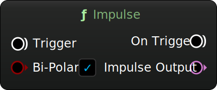

MetaSound Branches
Impulse
Category: Generators
Trigger a one-sample impulse (unipolar or alternating polarity per impulse).
Inputs
| Name | Description | Type |
|---|---|---|
| Trigger | Trigger input to generate an impulse. | Trigger |
| Bi-Polar | Toggle between bipolar and unipolar impulse output. | Bool |
Outputs
| Name | Description | Type |
|---|---|---|
| On Trigger | Trigger passthrough. | Trigger |
| Impulse Out | Generated impulse output. | Audio |
Charles Matthews 2025